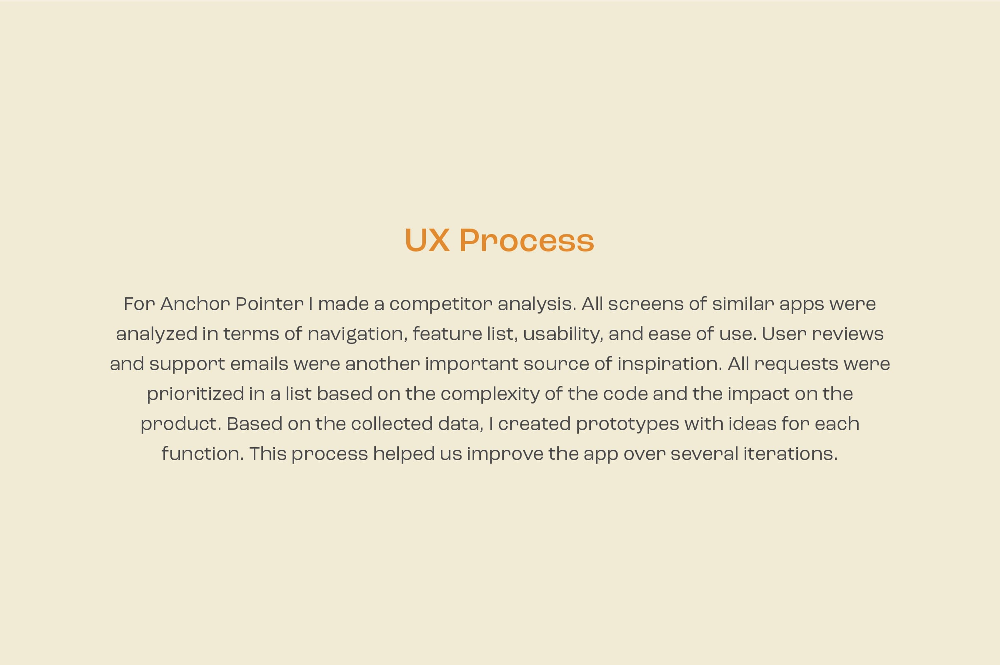
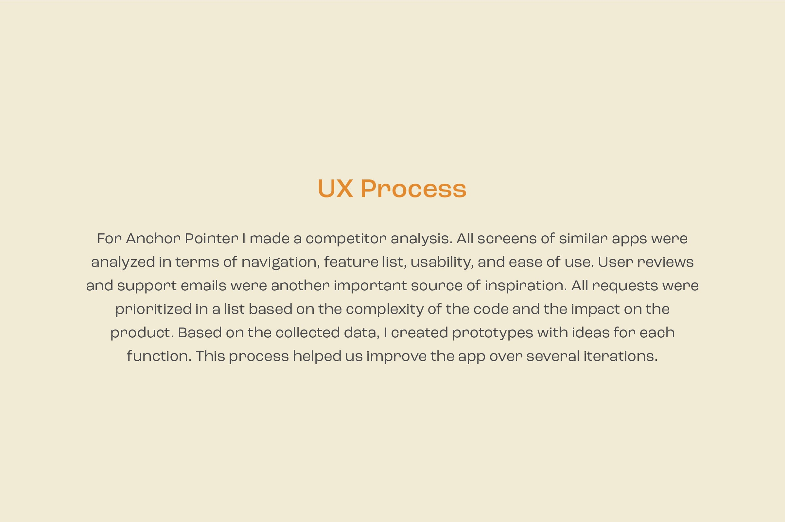

Hello. I’m Alexander Deplov. I design UI’s for apps and web since 2011.
My Career Path: 
Portfolio.

 


Navigation App for iOS. Anchor Pointer is a avigation
app that uses a simple arrow to show where you need to go and how far you need to go.
I created a UI prototype using Sketch and we quickly built the first working MVP in code.
Over the next few years, the
app evolved by collecting user feedback and analyzing Flurry analytics.
Currently, Anchor Pointer has 400K+ users worldwide, it's translated into more than 10
languages, and the average rating in the US is 4.6, with 1.6K+ having voted.
Reimagining YouTube Icons. My version of YouTube icons is
based on larger menu items. It is better suited for
touchscreen devices. The
second idea is to give the icons more humanity.
The icons should be more about people and less
about the "tube". That's why we see a face on the "Watch Later" item menu icon, rounded, soft
corners, and
the home icon has a roof that enhances this effect.


Olli for iOS. The client set the task of creating an
interface for
the new iOS app that
could
apply filters to
a camera view in real-time.
Based on the research data, a prototype interface was developed in low-fidelity and
high-fidelity forms. In order for the
programmers to implement an interface, the manual was created.
The annual design magazine "UI
Graphics 2" (Japan) publishes a separate chapter on App UI.


Waterlogue Pro for macOS. New York-based Tinrocket, LLC, is developing the
Waterlogue app for iOS. The app can take any photo and magically
transform it into a real-looking watercolor painting. My job was to translate the iOS user
interface into the macOS
version of the app.
Since the target audience is not professional artists, I decided to make the interface elements
large and uncluttered.
In addition to a toolbar with large icons, I created a popup window that contains controls
related only to the active
tool.
This menu has a non-standard look, so the clickable area is larger than the
standard macOS UI elements.
Japanese dictionary for iOS. Work closely with the developer of Imiwa? and help design the app icon and website. Imiwa? is a free multilingual Japanese dictionary for iOS.


Self written blog engine. Macilove
is an Apple fan blog. We decided to write our own
blog engine on PHP/JS to have more options for custom layouts. Most competitors on the market
were using blog templates that looked the same, we wanted to change that.
The site caught the
attention of Neo@Ogilvy and they invited me to promote Apple's online store in Russia through an
affiliate program.


Sway for iOS. At the time I was hired, a draft version of the
Sway
app had already been created, my task was to
improve the original
design. It was also necessary to create an app icon, improve the corporate colors and user flow,
create promo assets and
more.
Each variant of the app interface was recreated in Figma and tested on a real device with the
target audience.
Sway launches #CoolRanchDance in partnership with Doritos: Join the AI Dance Challenge!